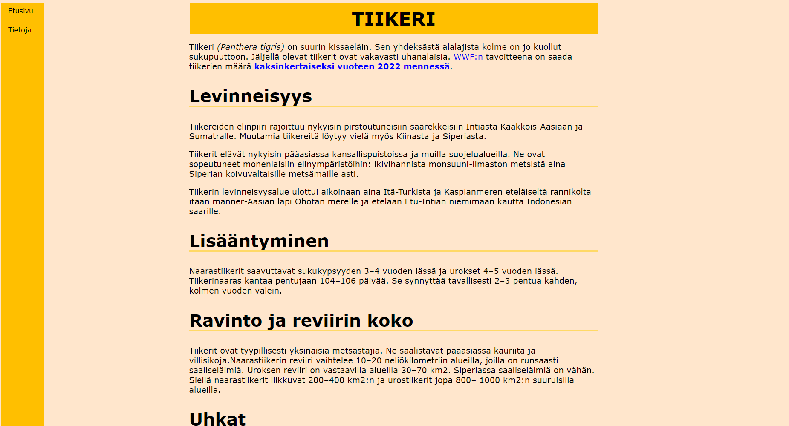
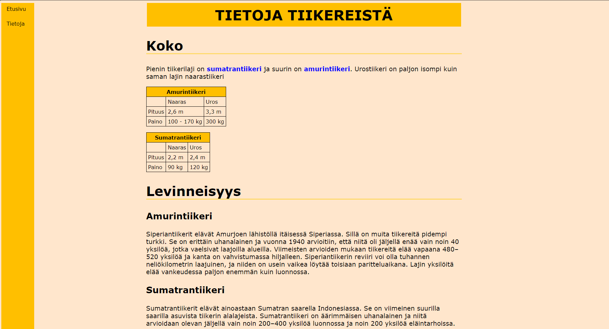

Työt
Ergonomiasta työ

Työssä piti toteuttaa nettisivut mallikuvan perusteella. Mallikuvassa oli kopioitava teksti ja tyylitiedostoon lisättävät asiat. Linkki työhön.
Tietoja tiikereistä työ
 Työssä piti luoda yksi sivu mallin perusteella, sitten siihen lisättiin toinen sivu ja toista sivua voitiin muokata haluamallaan tavalla. Linkki työhön.